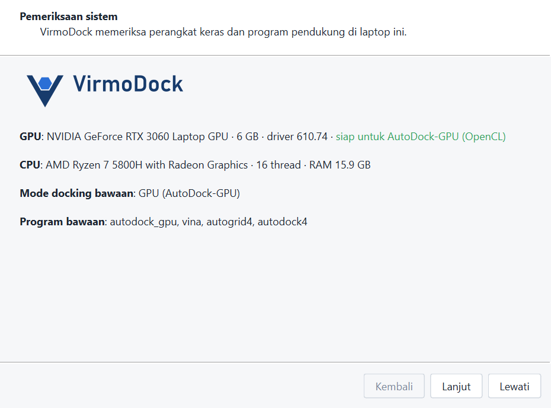

Instalasi
VirmoLab berjalan di Windows 10/11 64-bit tanpa perlu Python, WSL, MGLTools, atau program lain. Mesin docking Vina dan AutoDock-GPU sudah disertakan. Alat lanjutan yang hanya ada untuk Linux (Uni-Dock, OpenFE, GNINA, Boltz-2) bersifat opsional dan dipasang dari dalam aplikasi; lihat Alat lanjutan.
Kebutuhan minimum
| Minimum | Disarankan | |
|---|---|---|
| Sistem | Windows 10 64-bit | Windows 10/11 64-bit terbaru |
| RAM | 4 GB | 8 GB atau lebih |
| Ruang disk | ± 1,8 GB (program) + ruang proyek | SSD |
| GPU | Tidak wajib (Vina di CPU) | NVIDIA/AMD/Intel dengan driver OpenCL terbaru (AutoDock-GPU) |
| Layar | 1366 × 768 | 1920 × 1080, skala 100–200 % |
Pilihan A — Installer (disarankan)
- Jalankan
VirmoLab-Setup-x.y.z.exe. Bila Windows SmartScreen muncul (“Windows protected your PC”), klik More info › Run anyway — installer belum ditandatangani sertifikat berbayar. - Pilih untuk siapa VirmoLab dipasang. Bawaannya hanya untuk pengguna ini, di
%LOCALAPPDATA%\Programs\VirmoLab, tanpa hak admin. Pilih semua pengguna bila inginC:\Program Files\VirmoLab(butuh hak admin). - Pilih tugas tambahan: ikon Desktop, kaitkan berkas
.pdbqt/.vmdbackupdengan VirmoLab (opsional). - Klik Pasang, lalu Selesai untuk membuka VirmoLab.
Hapus pemasangan lewat Settings › Apps › VirmoLab › Uninstall. Proyek di folder kerja (bawaan Documents\VirmoLab) tidak ikut terhapus.
Pilihan B — Versi portable (tanpa instalasi)
- Ekstrak
VirmoLab-Portable-x.y.z.zipke folder mana saja (mis. flashdisk atauD:\VirmoLab). Hindari folder yang dilindungi sepertiC:\Program Files. - Jalankan
VirmoLab.exe.
Versi portable menyimpan pengaturan di data\pengaturan.ini dan proyek bawaan di Proyek\ di dalam folder itu sendiri — tidak menyentuh registry. Penanda portable adalah berkas portable.flag; jangan dihapus.
Pertama kali dibuka

- Pemeriksaan sistem: GPU, driver, CPU, RAM, dan mode docking bawaan (GPU bila OpenCL tersedia, selain itu CPU). Bila GPU ada tetapi OpenCL tidak, ikuti panduan driver yang muncul — lihat Setup GPU.
- Software pendukung: PyMOL, ChimeraX, Discovery Studio Visualizer dideteksi untuk tombol “Buka di…”. Semuanya opsional.
- Folder kerja: tempat proyek baru disimpan.
Deteksi GPU dijalankan ulang setiap kali VirmoLab dibuka, jadi setelah pindah laptop atau memperbarui driver tidak perlu mengatur apa pun. Wizard bisa dibuka lagi lewat Alat › Cek sistem dan GPU….
Alat lanjutan (opsional, lewat WSL)
Empat alat hanya ada untuk Linux, sehingga tidak ikut installer. Fitur inti (preparasi, docking Vina dan
AutoDock-GPU, analisis, laporan) tidak membutuhkannya. Bila diperlukan, pasang dari dalam VirmoLab lewat
Alat › Pasang alat lanjutan (WSL)…. Alat dipasang di WSL (Windows Subsystem for Linux), di folder rumah
Linux ~/virmolab-alat; tidak ada data proyek yang dikirim.
| Paket | Isi | Dipakai untuk | Ruang disk | Lama (uji 25 Okt 2026) |
|---|---|---|---|---|
| Docking GPU & RBFE | Uni-Dock 1.2, OpenFE 1.13 | Docking batch di GPU NVIDIA; energi bebas relatif (RBFE) | ± 15 GB (± 19 GB selama pemasangan) | ± 10 menit |
| Co-folding & skor CNN | Boltz-2 2.2.1 beserta bobotnya, GNINA 1.3.3 | Co-folding protein–ligan dan docking peptida; skor ulang CNN | ± 17 GB | ± 14 menit |
Lama pemasangan diukur pada koneksi ± 12 MB/s (± 100 Mbps); di koneksi lambat bisa beberapa kali lipat.
Prasyarat
Dialog memeriksa semuanya sebelum tombol Pasang aktif dan menawarkan perbaikan untuk yang belum terpenuhi.
- Windows 10 versi 2004 (build 19041) atau lebih baru, atau Windows 11.
- WSL 2 dengan distro Linux (Ubuntu). Bila belum ada, tombol Pasang WSL… membuka jendela persetujuan administrator Windows. Sesudah itu restart, buka Ubuntu sekali dari menu Start untuk membuat nama pengguna dan kata sandi, lalu buka dialog lagi.
- GPU NVIDIA dengan driver Windows terbaru untuk Uni-Dock dan GNINA (keduanya hanya CUDA). Tanpa GPU NVIDIA, kedua alat itu dilewati; OpenFE dan Boltz-2 tetap terpasang dan berjalan di CPU, tetapi sangat lambat.
- Ruang disk di drive Windows tempat disk virtual WSL berada (biasanya C:). Disk virtual itu tumbuh sendiri dan tidak mengecil otomatis setelah berkas dihapus.
- Internet ke conda-forge, GitHub, PyPI, PyTorch, dan Hugging Face. Di jaringan kampus mungkin perlu proksi
(variabel
HTTPS_PROXYdi Ubuntu).
Memasang
- Buka Alat › Pasang alat lanjutan (WSL)… dan tunggu pemeriksaan prasyarat (beberapa detik).
- Klik Pasang pada paket yang diperlukan. Langkah yang sedang berjalan, waktu, dan log tampil di bagian Kemajuan; dialog harus tetap terbuka.
- Selesai: tombol fitur langsung aktif, tanpa membuka ulang VirmoLab.
Hentikan menghentikan semua proses pemasang di dalam WSL. Unduhan yang sudah selesai disimpan, jadi
klik Pasang lagi untuk melanjutkan, juga setelah koneksi putus. Log lengkap tiap paket ada di
%LOCALAPPDATA%\VirmoLab\log\alat_wsl_gpu_rbfe.log dan alat_wsl_cofolding.log.
Bila komputer punya lebih dari satu distro, pilih distronya di bagian Prasyarat; VirmoLab memakai distro itu untuk semua alat lanjutan.
Menghapus
Di terminal Ubuntu: rm -rf ~/virmolab-alat ~/.boltz. Ruang di drive C: baru kembali setelah disk
virtual WSL dipadatkan, misalnya dengan wsl --manage Ubuntu --set-sparse true di PowerShell (WSL 2.0
ke atas).
Lokasi berkas
| Isi | Terpasang | Portable |
|---|---|---|
| Program | Folder instalasi | Folder hasil ekstrak |
| Pengaturan | Registry HKCU\Software\VirmoLab | data\pengaturan.ini |
| Log (untuk lapor masalah) | %LOCALAPPDATA%\VirmoLab\log | data\log |
| Proyek | Documents\VirmoLab (bisa diubah) | Proyek\ |